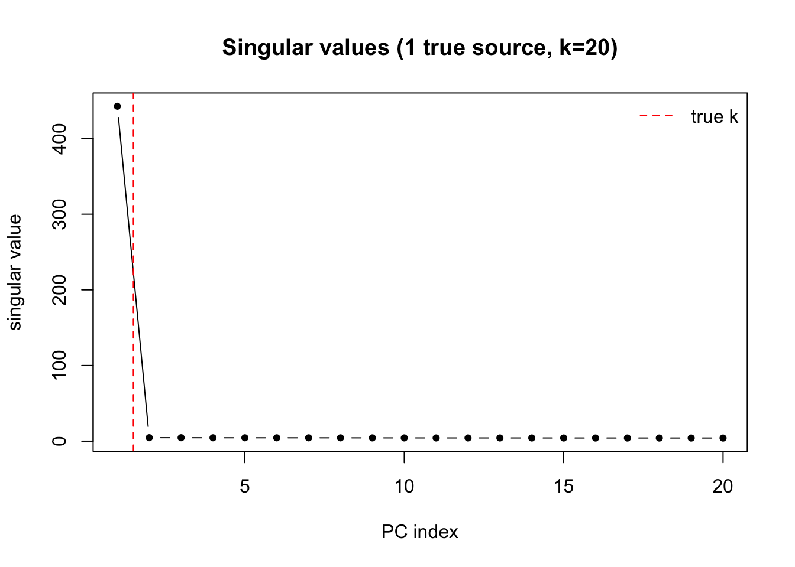
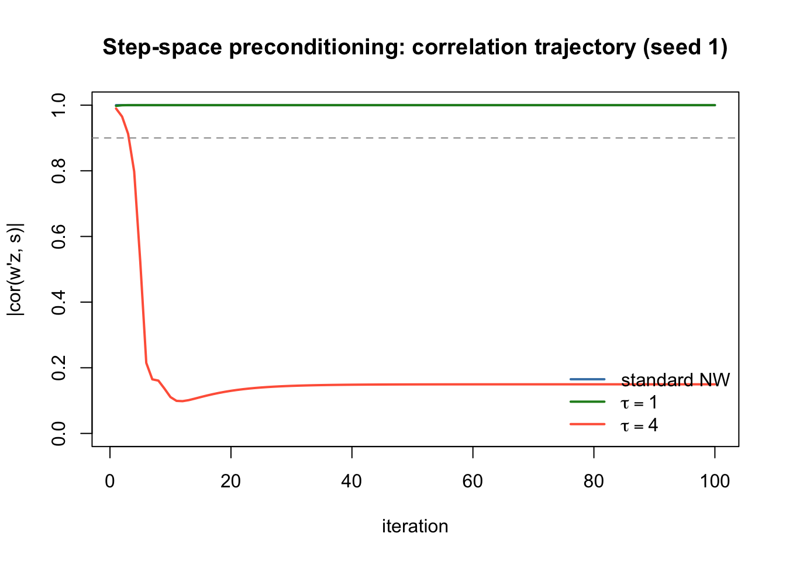
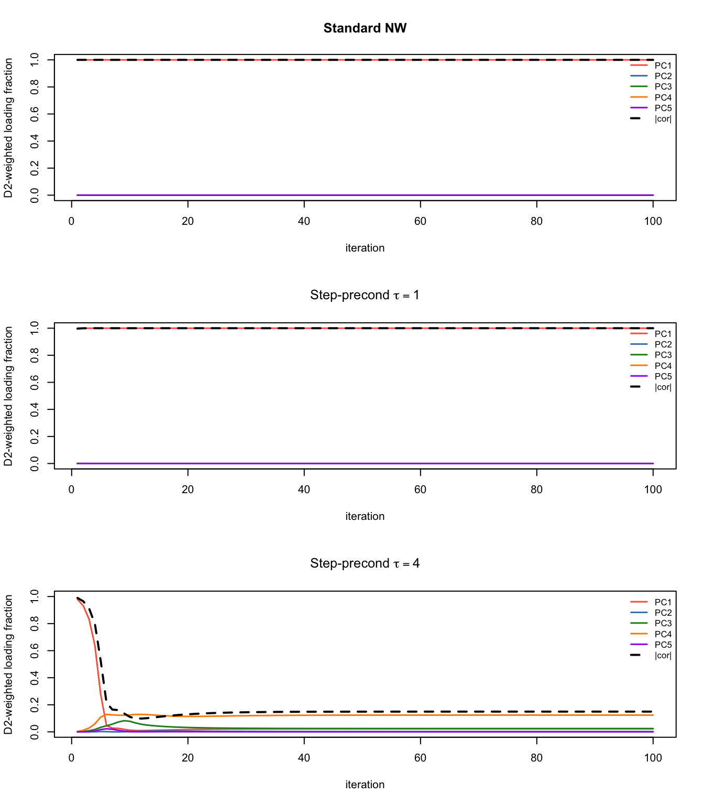
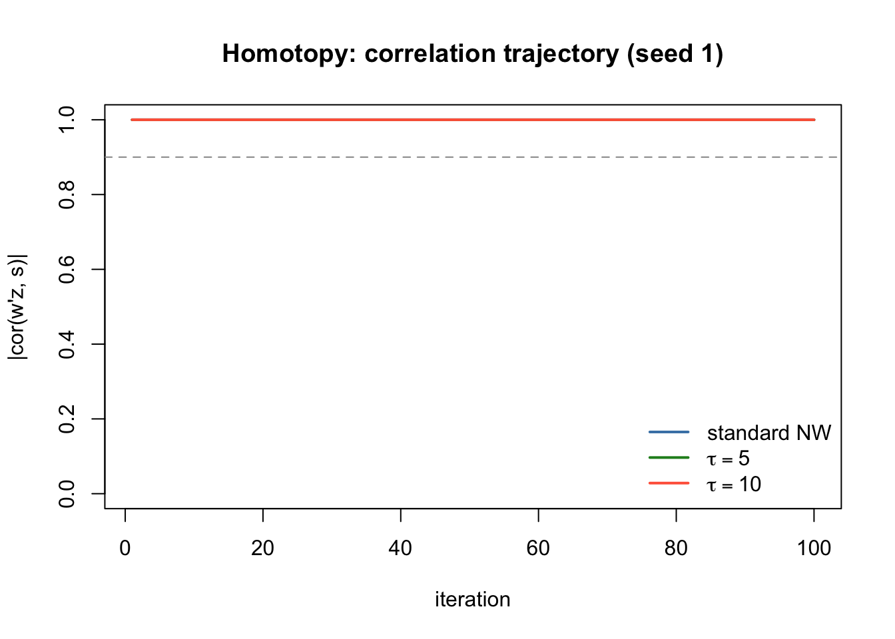
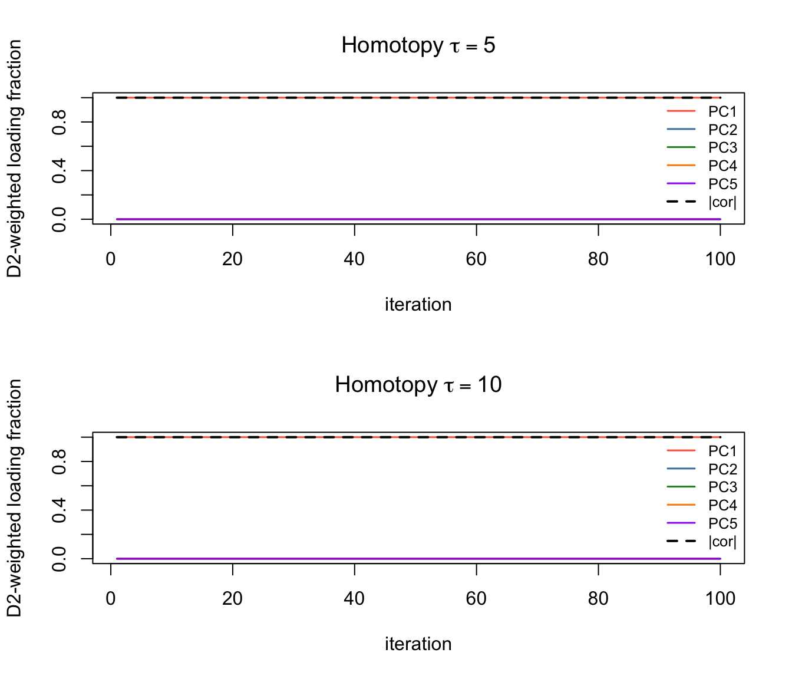
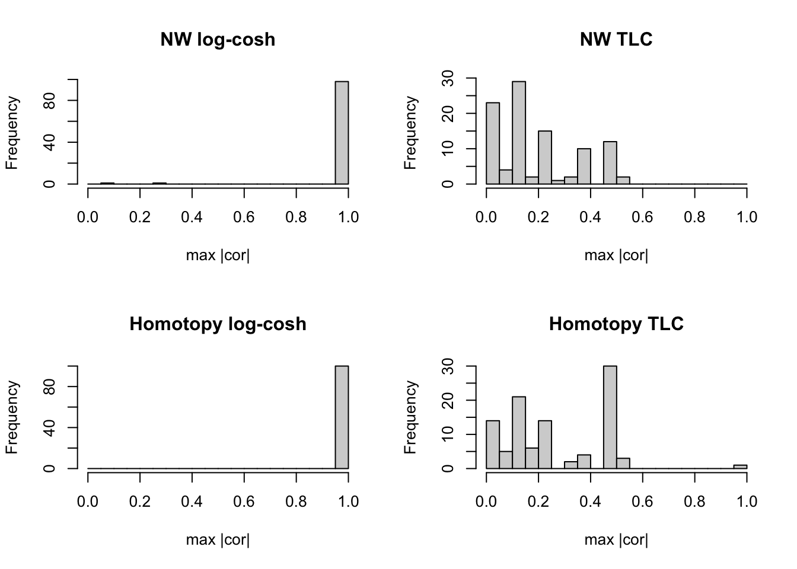
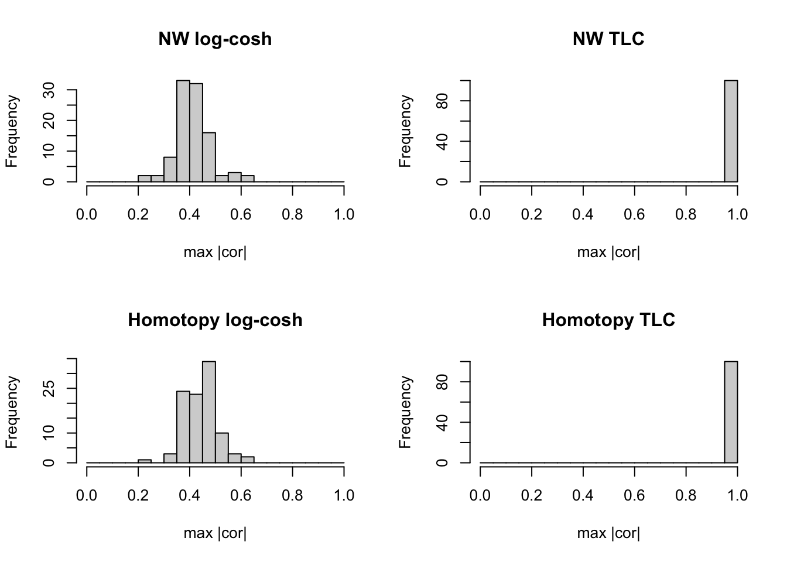

Last updated: 2026-07-17
Checks: 6 1
Knit directory: misc/analysis/
This reproducible R Markdown analysis was created with workflowr (version 1.7.2). The Checks tab describes the reproducibility checks that were applied when the results were created. The Past versions tab lists the development history.
The R Markdown is untracked by Git. To know which version of the R Markdown file created these results, you’ll want to first commit it to the Git repo. If you’re still working on the analysis, you can ignore this warning. When you’re finished, you can run wflow_publish to commit the R Markdown file and build the HTML.
Great job! The global environment was empty. Objects defined in the global environment can affect the analysis in your R Markdown file in unknown ways. For reproduciblity it’s best to always run the code in an empty environment.
The command set.seed(1) was run prior to running the code in the R Markdown file. Setting a seed ensures that any results that rely on randomness, e.g. subsampling or permutations, are reproducible.
Great job! Recording the operating system, R version, and package versions is critical for reproducibility.
Nice! There were no cached chunks for this analysis, so you can be confident that you successfully produced the results during this run.
Great job! Using relative paths to the files within your workflowr project makes it easier to run your code on other machines.
Great! You are using Git for version control. Tracking code development and connecting the code version to the results is critical for reproducibility.
The results in this page were generated with repository version f33b4cb. See the Past versions tab to see a history of the changes made to the R Markdown and HTML files.
Note that you need to be careful to ensure that all relevant files for the analysis have been committed to Git prior to generating the results (you can use wflow_publish or wflow_git_commit). workflowr only checks the R Markdown file, but you know if there are other scripts or data files that it depends on. Below is the status of the Git repository when the results were generated:
Ignored files:
Ignored: .DS_Store
Ignored: .Rhistory
Ignored: .Rproj.user/
Ignored: .claude/
Ignored: GSE87571/
Ignored: analysis/.RData
Ignored: analysis/.Rhistory
Ignored: analysis/ALStruct_cache/
Ignored: data/.Rhistory
Ignored: data/methylation-data-for-matthew.rds
Ignored: data/pbmc/
Ignored: data/pbmc_purified.RData
Untracked files:
Untracked: .dropbox
Untracked: GSE41037/
Untracked: Icon
Untracked: analysis/GHstan.Rmd
Untracked: analysis/GTEX-cogaps.Rmd
Untracked: analysis/PACS.Rmd
Untracked: analysis/Rplot.png
Untracked: analysis/SPCAvRP.rmd
Untracked: analysis/abf_comparisons.Rmd
Untracked: analysis/admm_02.Rmd
Untracked: analysis/admm_03.Rmd
Untracked: analysis/bispca.Rmd
Untracked: analysis/cache/
Untracked: analysis/cholesky.Rmd
Untracked: analysis/compare-transformed-models.Rmd
Untracked: analysis/cormotif.Rmd
Untracked: analysis/cp_ash.Rmd
Untracked: analysis/eQTL.perm.rand.pdf
Untracked: analysis/eb_power2.Rmd
Untracked: analysis/eb_prepilot.Rmd
Untracked: analysis/eb_var.Rmd
Untracked: analysis/ebpmf1.Rmd
Untracked: analysis/ebpmf_sla_text.Rmd
Untracked: analysis/ebspca_sims.Rmd
Untracked: analysis/explore_psvd.Rmd
Untracked: analysis/fa_check_identify.Rmd
Untracked: analysis/fa_iterative.Rmd
Untracked: analysis/fastica_heated.Rmd
Untracked: analysis/fastica_precondition.Rmd
Untracked: analysis/fastica_unwhitened.Rmd
Untracked: analysis/flash_cov_overlapping_groups_init.Rmd
Untracked: analysis/flash_test_tree.Rmd
Untracked: analysis/flashier_newgroups.Rmd
Untracked: analysis/flashier_nmf_triples.Rmd
Untracked: analysis/flashier_pbmc.Rmd
Untracked: analysis/flashier_snn_shifted_prior.Rmd
Untracked: analysis/greedy_ebpmf_exploration_00.Rmd
Untracked: analysis/ieQTL.perm.rand.pdf
Untracked: analysis/lasso_em_03.Rmd
Untracked: analysis/m6amash.Rmd
Untracked: analysis/mash_bhat_z.Rmd
Untracked: analysis/mash_ieqtl_permutations.Rmd
Untracked: analysis/matrix_beta.Rmd
Untracked: analysis/meth_flash_01.Rmd
Untracked: analysis/methylation_example.Rmd
Untracked: analysis/mixsqp.Rmd
Untracked: analysis/mr.ash_lasso_init.Rmd
Untracked: analysis/mr.mash.test.Rmd
Untracked: analysis/mr_ash_modular.Rmd
Untracked: analysis/mr_ash_parameterization.Rmd
Untracked: analysis/mr_ash_ridge.Rmd
Untracked: analysis/mv_gaussian_message_passing.Rmd
Untracked: analysis/nejm.Rmd
Untracked: analysis/nmf_bg.Rmd
Untracked: analysis/nonneg_underapprox.Rmd
Untracked: analysis/normal_conditional_on_r2.Rmd
Untracked: analysis/normalize.Rmd
Untracked: analysis/pbmc.Rmd
Untracked: analysis/pca_binary_weighted.Rmd
Untracked: analysis/pca_l1.Rmd
Untracked: analysis/poisson_nmf_approx.Rmd
Untracked: analysis/poisson_shrink.Rmd
Untracked: analysis/poisson_transform.Rmd
Untracked: analysis/qrnotes.txt
Untracked: analysis/ridge_iterative_02.Rmd
Untracked: analysis/ridge_iterative_splitting.Rmd
Untracked: analysis/samps/
Untracked: analysis/sc_bimodal.Rmd
Untracked: analysis/shrinkage_comparisons_changepoints.Rmd
Untracked: analysis/susie_cov.Rmd
Untracked: analysis/susie_en.Rmd
Untracked: analysis/susie_z_investigate.Rmd
Untracked: analysis/svd-timing.Rmd
Untracked: analysis/temp.RDS
Untracked: analysis/temp.Rmd
Untracked: analysis/test-figure/
Untracked: analysis/test.Rmd
Untracked: analysis/test.Rpres
Untracked: analysis/test.md
Untracked: analysis/test_qr.R
Untracked: analysis/test_sparse.Rmd
Untracked: analysis/tree_dist_top_eigenvector.Rmd
Untracked: analysis/z.txt
Untracked: code/coordinate_descent_symNMF.R
Untracked: code/multivariate_testfuncs.R
Untracked: code/rqb.hacked.R
Untracked: data/4matthew/
Untracked: data/4matthew2/
Untracked: data/E-MTAB-2805.processed.1/
Untracked: data/ENSG00000156738.Sim_Y2.RDS
Untracked: data/GDS5363_full.soft.gz
Untracked: data/GSE41265_allGenesTPM.txt
Untracked: data/Muscle_Skeletal.ACTN3.pm1Mb.RDS
Untracked: data/P.rds
Untracked: data/Thyroid.FMO2.pm1Mb.RDS
Untracked: data/bmass.HaemgenRBC2016.MAF01.Vs2.MergedDataSources.200kRanSubset.ChrBPMAFMarkerZScores.vs1.txt.gz
Untracked: data/bmass.HaemgenRBC2016.Vs2.NewSNPs.ZScores.hclust.vs1.txt
Untracked: data/bmass.HaemgenRBC2016.Vs2.PreviousSNPs.ZScores.hclust.vs1.txt
Untracked: data/eb_prepilot/
Untracked: data/finemap_data/fmo2.sim/b.txt
Untracked: data/finemap_data/fmo2.sim/dap_out.txt
Untracked: data/finemap_data/fmo2.sim/dap_out2.txt
Untracked: data/finemap_data/fmo2.sim/dap_out2_snp.txt
Untracked: data/finemap_data/fmo2.sim/dap_out_snp.txt
Untracked: data/finemap_data/fmo2.sim/data
Untracked: data/finemap_data/fmo2.sim/fmo2.sim.config
Untracked: data/finemap_data/fmo2.sim/fmo2.sim.k
Untracked: data/finemap_data/fmo2.sim/fmo2.sim.k4.config
Untracked: data/finemap_data/fmo2.sim/fmo2.sim.k4.snp
Untracked: data/finemap_data/fmo2.sim/fmo2.sim.ld
Untracked: data/finemap_data/fmo2.sim/fmo2.sim.snp
Untracked: data/finemap_data/fmo2.sim/fmo2.sim.z
Untracked: data/finemap_data/fmo2.sim/pos.txt
Untracked: data/logm.csv
Untracked: data/m.cd.RDS
Untracked: data/m.cdu.old.RDS
Untracked: data/m.new.cd.RDS
Untracked: data/m.old.cd.RDS
Untracked: data/mainbib.bib.old
Untracked: data/mat.csv
Untracked: data/mat.txt
Untracked: data/mat_new.csv
Untracked: data/matrix_lik.rds
Untracked: data/paintor_data/
Untracked: data/running_data_chris.csv
Untracked: data/running_data_matthew.csv
Untracked: data/temp.txt
Untracked: data/y.txt
Untracked: data/y_f.txt
Untracked: data/zscore_jointLCLs_m6AQTLs_susie_eQTLpruned.rds
Untracked: data/zscore_jointLCLs_random.rds
Untracked: explore_udi.R
Untracked: output/fit.k10.rds
Untracked: output/fit.nn.pbmc.purified.rds
Untracked: output/fit.nn.rds
Untracked: output/fit.nn.s.001.rds
Untracked: output/fit.nn.s.01.rds
Untracked: output/fit.nn.s.1.rds
Untracked: output/fit.nn.s.10.rds
Untracked: output/fit.snn.s.001.rds
Untracked: output/fit.snn.s.01.nninit.rds
Untracked: output/fit.snn.s.01.rds
Untracked: output/fit.varbvs.RDS
Untracked: output/fit2.nn.pbmc.purified.rds
Untracked: output/glmnet.fit.RDS
Untracked: output/snn07.txt
Untracked: output/snn34.txt
Untracked: output/test.bv.txt
Untracked: output/test.gamma.txt
Untracked: output/test.hyp.txt
Untracked: output/test.log.txt
Untracked: output/test.param.txt
Untracked: output/test2.bv.txt
Untracked: output/test2.gamma.txt
Untracked: output/test2.hyp.txt
Untracked: output/test2.log.txt
Untracked: output/test2.param.txt
Untracked: output/test3.bv.txt
Untracked: output/test3.gamma.txt
Untracked: output/test3.hyp.txt
Untracked: output/test3.log.txt
Untracked: output/test3.param.txt
Untracked: output/test4.bv.txt
Untracked: output/test4.gamma.txt
Untracked: output/test4.hyp.txt
Untracked: output/test4.log.txt
Untracked: output/test4.param.txt
Untracked: output/test5.bv.txt
Untracked: output/test5.gamma.txt
Untracked: output/test5.hyp.txt
Untracked: output/test5.log.txt
Untracked: output/test5.param.txt
Unstaged changes:
Modified: .gitignore
Modified: analysis/eb_snmu.Rmd
Modified: analysis/ebnm_binormal.Rmd
Modified: analysis/ebpower.Rmd
Modified: analysis/flashier_log1p.Rmd
Modified: analysis/flashier_sla_text.Rmd
Modified: analysis/logistic_z_scores.Rmd
Modified: analysis/mr_ash_pen.Rmd
Modified: analysis/nmu_em.Rmd
Modified: analysis/susie_flash.Rmd
Modified: analysis/tap_free_energy.Rmd
Modified: misc.Rproj
Note that any generated files, e.g. HTML, png, CSS, etc., are not included in this status report because it is ok for generated content to have uncommitted changes.
There are no past versions. Publish this analysis with wflow_publish() to start tracking its development.
This analysis explores variance-prioritized initialization for non-whitened FastICA, extending the approach in fastica_nonwhitened and using the Tilted Log-Cosh (TLC) contrast from fastica_skew.
In non-whitened FastICA we work with \(Z = DV'\) (\(k \times n\)) and the constraint \(w'D^2 w = n\). The Newton fixed-point update is \[w \leftarrow nD^{-2}E[z\,g(w'z)] - E[g'(w'z)]\,w, \qquad w \leftarrow w\sqrt{n}/\sqrt{w'D^2 w}.\] A random \(w\) in the non-whitened parameterisation already implicitly biases convergence toward high-variance PCs. The goal here is to make that bias stronger, to further improve the success rate from random starts.
We try two approaches and explain why the first fails.
Scale the Newton displacement \(\Delta w = w_{target} - w\) by a time-decaying diagonal matrix \(P_t\) before applying it: \[P_{base} = \frac{D^2}{\max d_i^2}, \quad \alpha_t = e^{-t/\tau}, \quad P_t = \alpha_t P_{base} + (1-\alpha_t)I,\] \[w_{new} = \text{normalize}(w + P_t\,\Delta w).\]
# ---- shared helpers ----
preprocess_nonwhitened = function(X, n.comp) {
X = X - rowMeans(X)
sv = svd(X, nu = 0, nv = n.comp)
d = sv$d[1:n.comp]
Z = diag(d, nrow = length(d)) %*% t(sv$v)
D2 = diag(d^2, nrow = length(d))
list(Z = Z, D2 = D2, d = d)
}
normalize_nw = function(w, D2, n) {
w * sqrt(n) / sqrt(as.numeric(t(w) %*% D2 %*% w))
}
newton_target_nw = function(Z, D2, w, lambda = 0) {
d2 = diag(D2)
proj = as.vector(t(Z) %*% w)
G = tanh(proj) + 2 * lambda * abs(proj)
G2 = 1 - tanh(proj)^2 + 2 * lambda * sign(proj)
as.vector(Z %*% G) / d2 - mean(G2) * w
}
fastica_r1update_nw = function(Z, D2, w, lambda = 0) {
n = ncol(Z)
w = normalize_nw(w, D2, n)
normalize_nw(newton_target_nw(Z, D2, w, lambda), D2, n)
}
fastica_step_precond = function(Z, D2, w_init = NULL, tau = 10, lambda = 0,
tol = 1e-6, t_max = 500) {
n = ncol(Z); d2 = diag(D2)
Pbase = d2 / max(d2)
w = if (is.null(w_init)) rnorm(nrow(Z)) else w_init
w = normalize_nw(w, D2, n)
for (t in seq_len(t_max)) {
w_target = newton_target_nw(Z, D2, w, lambda)
Pt = exp(-t / tau) * Pbase + (1 - exp(-t / tau))
w_new = normalize_nw(w + Pt * (w_target - w), D2, n)
sim = abs(as.numeric(t(w_new) %*% D2 %*% w)) / n
w = w_new
if ((1 - sim) < tol) break
}
w
}
k_pca = 20
tau_vals = c(1, 5, 10, 20, 50)set.seed(10)
n = 200; p = 1000
A = matrix(rnorm(p), nrow = p)
S_rad = matrix(sample(c(-1, 1), n, replace = TRUE), nrow = 1)
X_rad = A %*% S_rad + matrix(rnorm(p * n, 0, 0.1), nrow = p)
nw_rad = preprocess_nonwhitened(X_rad, k_pca)
plot(nw_rad$d, type = "b", pch = 19, cex = 0.7,
xlab = "PC index", ylab = "singular value",
main = "Singular values (1 true source, k=20)")
abline(v = 1.5, lty = 2, col = "red")
legend("topright", "true k", lty = 2, col = "red", bty = "n")
trace_step_precond = function(Z, D2, s, w_init, tau, lambda = 0, n_iter = 100) {
n = ncol(Z); d2 = diag(D2); k = nrow(Z)
Pbase = d2 / max(d2)
w = normalize_nw(w_init, D2, n)
cors = numeric(n_iter); pc_wt = matrix(0, n_iter, k)
for (t in seq_len(n_iter)) {
w_target = newton_target_nw(Z, D2, w, lambda)
Pt = exp(-t / tau) * Pbase + (1 - exp(-t / tau))
w = normalize_nw(w + Pt * (w_target - w), D2, n)
cors[t] = abs(cor(as.vector(s), as.vector(t(Z) %*% w)))
pc_wt[t,] = as.vector(w)^2 * d2 / sum(as.vector(w)^2 * d2)
}
list(cors = cors, pc_wt = pc_wt)
}
trace_nw = function(Z, D2, s, w_init, lambda = 0, n_iter = 100) {
n = ncol(Z); d2 = diag(D2); k = nrow(Z)
w = normalize_nw(w_init, D2, n)
cors = numeric(n_iter); pc_wt = matrix(0, n_iter, k)
for (t in seq_len(n_iter)) {
w = fastica_r1update_nw(Z, D2, w, lambda)
cors[t] = abs(cor(as.vector(s), as.vector(t(Z) %*% w)))
pc_wt[t,] = as.vector(w)^2 * d2 / sum(as.vector(w)^2 * d2)
}
list(cors = cors, pc_wt = pc_wt)
}
set.seed(1); w0 = rnorm(k_pca)
tr_nw = trace_nw(nw_rad$Z, nw_rad$D2, S_rad, w0)
tr_s1 = trace_step_precond(nw_rad$Z, nw_rad$D2, S_rad, w0, tau = 1)
tr_s4 = trace_step_precond(nw_rad$Z, nw_rad$D2, S_rad, w0, tau = 4)plot(tr_nw$cors, type = "l", col = "steelblue", lwd = 2, ylim = c(0, 1),
xlab = "iteration", ylab = "|cor(w'z, s)|",
main = "Step-space preconditioning: correlation trajectory (seed 1)")
lines(tr_s1$cors, col = "forestgreen", lwd = 2)
lines(tr_s4$cors, col = "tomato", lwd = 2)
abline(h = 0.9, lty = 2, col = "grey60")
legend("bottomright",
c("standard NW", expression(tau==1), expression(tau==4)),
col = c("steelblue", "forestgreen", "tomato"), lwd = 2, bty = "n")
plot_pc_traj = function(pc_wt, cors, title, top = 5) {
cols = c("tomato", "steelblue", "forestgreen", "darkorange", "purple")
n_iter = nrow(pc_wt)
plot(NULL, xlim = c(1, n_iter), ylim = c(0, 1),
xlab = "iteration", ylab = "D2-weighted loading fraction", main = title)
for (j in 1:top) lines(pc_wt[, j], col = cols[j], lwd = 1.5)
par(new = TRUE)
plot(cors, type = "l", lty = 2, col = "black", lwd = 2,
xlim = c(1, n_iter), ylim = c(0, 1), axes = FALSE, xlab = "", ylab = "")
legend("topright", c(paste0("PC", 1:top), "|cor|"),
col = c(cols[1:top], "black"), lty = c(rep(1, top), 2),
lwd = c(rep(1.5, top), 2), bty = "n", cex = 0.8)
}
par(mfrow = c(3, 1))
plot_pc_traj(tr_nw$pc_wt, tr_nw$cors, "Standard NW")
plot_pc_traj(tr_s1$pc_wt, tr_s1$cors, expression("Step-precond " * tau == 1))
plot_pc_traj(tr_s4$pc_wt, tr_s4$cors, expression("Step-precond " * tau == 4))
par(mfrow = c(1, 1))The step-space preconditioner with \(P_{t,i} \approx 0\) for noise PCs effectively freezes those components: \(w_{new,i} \approx w_i + 0 \cdot \Delta w_i = w_i\). Only the PC 1 component receives a full Newton step.
The trouble is that \(w_{target}\) is computed from \(t(Z) w\), which depends on all components of \(w\), including the frozen noise PCs. At every iteration the PC 1 Newton update is evaluated against stale, never-updated noise-PC coordinates. This creates a persistent mismatch between the assumed and true projection, causing the iterate to orbit rather than converge. With \(\tau = 1\) the preconditioner decays before this mismatch builds up; with \(\tau = 4\) it persists long enough to derail the iteration.
Instead of distorting the step direction, temporarily distort the target and let it morph back to the true Newton target. Define \[S_t = \alpha_t \frac{\text{diag}(D^2)}{\max d_i^2} + (1-\alpha_t)\mathbf{1}, \quad \alpha_t = e^{-t/\tau},\] and replace the Newton target with a biased version before normalizing: \[w_{new} = \text{normalize}(S_t \circ w_{target}).\]
Early iterations: minor-PC coordinates of \(w_{target}\) are shrunk, so the iterate is pulled toward high-variance PCs.
Late iterations (\(\alpha_t \to 0\)): \(S_t \to \mathbf{1}\), and we normalize the unmodified Newton target — identical to standard FastICA.
Crucially, \(w_{target}\) is always computed from the current \(w\) with no component frozen. The full Newton coupling is preserved at every step.
fastica_homotopy_nw = function(Z, D2, w_init = NULL, tau = 5, lambda = 0,
tol = 1e-6, t_max = 500) {
n = ncol(Z)
d2 = diag(D2)
Sbase = d2 / max(d2)
w = if (is.null(w_init)) rnorm(nrow(Z)) else w_init
w = normalize_nw(w, D2, n)
for (t in seq_len(t_max)) {
w_target = newton_target_nw(Z, D2, w, lambda)
S_t = exp(-t / tau) * Sbase + (1 - exp(-t / tau))
w_new = normalize_nw(w_target * S_t, D2, n)
sim = abs(as.numeric(t(w_new) %*% D2 %*% w)) / n
w = w_new
if ((1 - sim) < tol) break
}
w
}
run_seeds_homotopy = function(nw, S_true, tau = 5, lambda = 0, n_seeds = 100,
tol = 1e-6, t_max = 500) {
maxcor = numeric(n_seeds)
for (seed in seq_len(n_seeds)) {
set.seed(seed)
w = fastica_homotopy_nw(nw$Z, nw$D2,
w_init = rnorm(nrow(nw$Z)),
tau = tau,
lambda = lambda,
tol = tol,
t_max = t_max)
proj = as.vector(t(nw$Z) %*% w)
maxcor[seed] = max(abs(cor(t(S_true), proj)))
}
maxcor
}
run_seeds_nw = function(nw, S_true, lambda = 0, n_seeds = 100, n_iter = 500) {
maxcor = numeric(n_seeds)
for (seed in seq_len(n_seeds)) {
set.seed(seed)
w = rnorm(nrow(nw$Z))
for (i in seq_len(n_iter)) w = fastica_r1update_nw(nw$Z, nw$D2, w, lambda)
proj = as.vector(t(nw$Z) %*% w)
maxcor[seed] = max(abs(cor(t(S_true), proj)))
}
maxcor
}trace_homotopy = function(Z, D2, s, w_init, tau, lambda = 0, n_iter = 100) {
n = ncol(Z); d2 = diag(D2); k = nrow(Z)
Sbase = d2 / max(d2)
w = normalize_nw(w_init, D2, n)
cors = numeric(n_iter); pc_wt = matrix(0, n_iter, k)
for (t in seq_len(n_iter)) {
w_target = newton_target_nw(Z, D2, w, lambda)
S_t = exp(-t / tau) * Sbase + (1 - exp(-t / tau))
w = normalize_nw(w_target * S_t, D2, n)
cors[t] = abs(cor(as.vector(s), as.vector(t(Z) %*% w)))
pc_wt[t,] = as.vector(w)^2 * d2 / sum(as.vector(w)^2 * d2)
}
list(cors = cors, pc_wt = pc_wt)
}
set.seed(1); w0 = rnorm(k_pca)
tr_h5 = trace_homotopy(nw_rad$Z, nw_rad$D2, S_rad, w0, tau = 5)
tr_h10 = trace_homotopy(nw_rad$Z, nw_rad$D2, S_rad, w0, tau = 10)plot(tr_nw$cors, type = "l", col = "steelblue", lwd = 2, ylim = c(0, 1),
xlab = "iteration", ylab = "|cor(w'z, s)|",
main = "Homotopy: correlation trajectory (seed 1)")
lines(tr_h5$cors, col = "forestgreen", lwd = 2)
lines(tr_h10$cors, col = "tomato", lwd = 2)
abline(h = 0.9, lty = 2, col = "grey60")
legend("bottomright",
c("standard NW", expression(tau==5), expression(tau==10)),
col = c("steelblue", "forestgreen", "tomato"), lwd = 2, bty = "n")
par(mfrow = c(2, 1))
plot_pc_traj(tr_h5$pc_wt, tr_h5$cors, expression("Homotopy " * tau == 5))
plot_pc_traj(tr_h10$pc_wt, tr_h10$cors, expression("Homotopy " * tau == 10))
par(mfrow = c(1, 1))Four methods: standard NW and homotopy, each with log-cosh (λ=0) and TLC (λ=1). As shown above, TLC has the wrong objective for the symmetric Rademacher source and is expected to fail here; it is included to demonstrate this.
mc1 = list(
nw_lc = run_seeds_nw(nw_rad, S_rad, lambda = 0),
nw_tlc = run_seeds_nw(nw_rad, S_rad, lambda = 1),
ho_lc = run_seeds_homotopy(nw_rad, S_rad, tau = 5, lambda = 0),
ho_tlc = run_seeds_homotopy(nw_rad, S_rad, tau = 5, lambda = 1)
)
methods1 = c("NW log-cosh", "NW TLC", "Homotopy log-cosh", "Homotopy TLC")
for (i in seq_along(mc1))
cat(sprintf("%-20s mean=%.3f frac>0.9=%.2f\n",
methods1[i], mean(mc1[[i]]), mean(mc1[[i]] > 0.9)))NW log-cosh mean=0.984 frac>0.9=0.98
NW TLC mean=0.200 frac>0.9=0.00
Homotopy log-cosh mean=1.000 frac>0.9=1.00
Homotopy TLC mean=0.268 frac>0.9=0.01par(mfrow = c(2, 2))
for (i in seq_along(mc1))
hist(mc1[[i]], breaks = seq(0, 1, by = 0.05),
main = methods1[i], xlab = "max |cor|")
par(mfrow = c(1, 1))The Rademacher source is symmetric (\(P(s=+1) = P(s=-1) = 0.5\)). The TLC objective is \(G(z) = \log\cosh(z) + \lambda z|z|\), where the extra term \(z|z|\) rewards skewness. For a perfectly symmetric source \(E[s|s|] = E[s] = 0\), so TLC adds zero contrast at the true source direction. In a finite sample, however, noise PCs can appear skewed by chance. TLC then treats those spuriously skewed noise directions as better optima than the symmetric true source — this is an objective landscape problem, not a convergence failure.
We verify this directly: compute both objectives at the LC solution, TLC solution, and the pure PC1 direction, and check whether TLC’s converged solution genuinely has a higher TLC score than PC1.
obj_lc = function(Z, D2, w) {
w = normalize_nw(w, D2, ncol(Z))
mean(log(cosh(as.vector(t(Z) %*% w))))
}
obj_tlc = function(Z, D2, w, lambda = 1) {
w = normalize_nw(w, D2, ncol(Z))
p = as.vector(t(Z) %*% w)
mean(log(cosh(p)) + lambda * abs(p) * p)
}
k = nrow(nw_rad$Z)
n = ncol(nw_rad$Z)
d2v = diag(nw_rad$D2)
set.seed(1); w0 = rnorm(k_pca)
w_lc = w0; for (i in 1:500) w_lc = fastica_r1update_nw(nw_rad$Z, nw_rad$D2, w_lc, lambda = 0)
w_tlc = w0; for (i in 1:500) w_tlc = fastica_r1update_nw(nw_rad$Z, nw_rad$D2, w_tlc, lambda = 1)
e1 = rep(0, k_pca); e1[1] = 1
e1_norm = e1 * sqrt(n / d2v[1]) # PC1 direction, normalised to w'D2 w = n
cat("--- Log-cosh objective ---\n")--- Log-cosh objective ---cat(" LC solution: ", round(obj_lc(nw_rad$Z, nw_rad$D2, w_lc), 5), "\n") LC solution: 0.43335 cat(" TLC solution: ", round(obj_lc(nw_rad$Z, nw_rad$D2, w_tlc), 5), "\n") TLC solution: 0.35892 cat(" PC1 (true source): ", round(obj_lc(nw_rad$Z, nw_rad$D2, e1_norm), 5), "\n") PC1 (true source): 0.43335 cat("\n--- TLC objective (lambda=1) ---\n")
--- TLC objective (lambda=1) ---cat(" LC solution: ", round(obj_tlc(nw_rad$Z, nw_rad$D2, w_lc), 5), "\n") LC solution: 0.38335 cat(" TLC solution: ", round(obj_tlc(nw_rad$Z, nw_rad$D2, w_tlc), 5), "\n") TLC solution: 0.67427 cat(" PC1 (true source): ", round(obj_tlc(nw_rad$Z, nw_rad$D2, e1_norm), 5), "\n") PC1 (true source): 0.48335 cat("\n--- Correlation with true source ---\n")
--- Correlation with true source ---cat(" LC solution: ", round(abs(cor(as.vector(S_rad), as.vector(t(nw_rad$Z) %*% w_lc))), 3), "\n") LC solution: 1 cat(" TLC solution: ", round(abs(cor(as.vector(S_rad), as.vector(t(nw_rad$Z) %*% w_tlc))), 3), "\n") TLC solution: 0.201 cat(" PC1: ", round(abs(cor(as.vector(S_rad), as.vector(t(nw_rad$Z) %*% e1_norm))), 3), "\n") PC1: 1 The TLC solution has a higher TLC objective than PC1, confirming this is a landscape problem: TLC has found a genuine (but wrong) optimum at a dense, apparently-skewed noise direction. The log-cosh objective is higher at PC1 than at the TLC solution, so log-cosh correctly identifies the true source. TLC should only be used for skewed/sparse sources.
mc1_tau = lapply(tau_vals, function(tau)
run_seeds_homotopy(nw_rad, S_rad, tau = tau, lambda = 0))
cat("frac > 0.9 by tau (log-cosh):\n")frac > 0.9 by tau (log-cosh):for (i in seq_along(tau_vals))
cat(" tau =", tau_vals[i], ":", round(mean(mc1_tau[[i]] > 0.9), 3), "\n") tau = 1 : 0.98
tau = 5 : 1
tau = 10 : 1
tau = 20 : 1
tau = 50 : 1 Standard log-cosh fails here; TLC is needed (see fastica_skew). We compare all four methods.
set.seed(1)
n = 100; p = 1000; K = 9
L = matrix(0, nrow = n, ncol = K)
for (i in 1:K) L[sample(n, 20), i] = 1
FF = matrix(rnorm(p * K), nrow = p)
X9 = t(L %*% t(FF) + matrix(rnorm(n * p, 0, 0.1), nrow = n))
nw9 = preprocess_nonwhitened(X9, k_pca)
mc9 = list(
nw_lc = run_seeds_nw(nw9, t(L), lambda = 0),
nw_tlc = run_seeds_nw(nw9, t(L), lambda = 1),
ho_lc = run_seeds_homotopy(nw9, t(L), tau = 5, lambda = 0),
ho_tlc = run_seeds_homotopy(nw9, t(L), tau = 5, lambda = 1)
)
methods9 = methods1
for (i in seq_along(mc9))
cat(sprintf("%-20s mean=%.3f frac>0.9=%.2f\n",
methods9[i], mean(mc9[[i]]), mean(mc9[[i]] > 0.9)))NW log-cosh mean=0.412 frac>0.9=0.00
NW TLC mean=1.000 frac>0.9=1.00
Homotopy log-cosh mean=0.443 frac>0.9=0.00
Homotopy TLC mean=1.000 frac>0.9=1.00par(mfrow = c(2, 2))
for (i in seq_along(mc9))
hist(mc9[[i]], breaks = seq(0, 1, by = 0.05),
main = methods9[i], xlab = "max |cor|")
par(mfrow = c(1, 1))mc9_tau = lapply(tau_vals, function(tau)
run_seeds_homotopy(nw9, t(L), tau = tau, lambda = 1))
cat("frac > 0.9 by tau (TLC):\n")frac > 0.9 by tau (TLC):for (i in seq_along(tau_vals))
cat(" tau =", tau_vals[i], ":", round(mean(mc9_tau[[i]] > 0.9), 3), "\n") tau = 1 : 1
tau = 5 : 1
tau = 10 : 1
tau = 20 : 1
tau = 50 : 1 Step-space preconditioning (Approach 1) fails for \(\tau \geq 4\). When \(P_{t,i} \approx 0\) for noise PCs, those components are effectively frozen while only PC 1 is updated. But \(w_{target}\) depends on \(Z'w\) — the full projection using all components — so the PC 1 Newton step is computed against stale noise-PC values at every iteration. This persistent mismatch causes oscillation rather than convergence.
Homotopy method (Approach 2) avoids this by computing \(w_{target}\) from the full current \(w\), then shrinking minor-PC coordinates of that target before normalizing. No component is ever frozen; the full Newton coupling is preserved. As \(\alpha_t \to 0\) the bias vanishes and we recover standard Newton with quadratic convergence.
TLC contrast (\(\lambda = 1\)) is needed for skewed/sparse sources (e.g. the 9-source overlapping group problem with p=0.2), where standard log-cosh falls below the Gaussian baseline and fails. TLC should not be used for symmetric sources (e.g. Rademacher p=0.5): the \(z|z|\) term adds zero contrast at the true source but can reward finite-sample skewness in noise directions, producing a genuinely higher TLC objective at a wrong (noise) direction than at the true source.
sessionInfo()R version 4.4.2 (2024-10-31)
Platform: aarch64-apple-darwin20
Running under: macOS 26.5.2
Matrix products: default
BLAS: /System/Library/Frameworks/Accelerate.framework/Versions/A/Frameworks/vecLib.framework/Versions/A/libBLAS.dylib
LAPACK: /Library/Frameworks/R.framework/Versions/4.4-arm64/Resources/lib/libRlapack.dylib; LAPACK version 3.12.0
locale:
[1] C
time zone: America/Detroit
tzcode source: internal
attached base packages:
[1] stats graphics grDevices utils datasets methods base
loaded via a namespace (and not attached):
[1] vctrs_0.7.2 cli_3.6.5 knitr_1.51 rlang_1.1.7
[5] xfun_0.56 stringi_1.8.7 otel_0.2.0 promises_1.5.0
[9] jsonlite_2.0.0 workflowr_1.7.2 glue_1.8.0 rprojroot_2.1.1
[13] git2r_0.36.2 htmltools_0.5.9 httpuv_1.6.16 sass_0.4.10
[17] rmarkdown_2.30 evaluate_1.0.5 jquerylib_0.1.4 tibble_3.3.1
[21] fastmap_1.2.0 yaml_2.3.12 lifecycle_1.0.5 stringr_1.6.0
[25] compiler_4.4.2 fs_1.6.6 Rcpp_1.1.1 pkgconfig_2.0.3
[29] later_1.4.6 digest_0.6.39 R6_2.6.1 pillar_1.11.1
[33] magrittr_2.0.4 bslib_0.10.0 tools_4.4.2 cachem_1.1.0